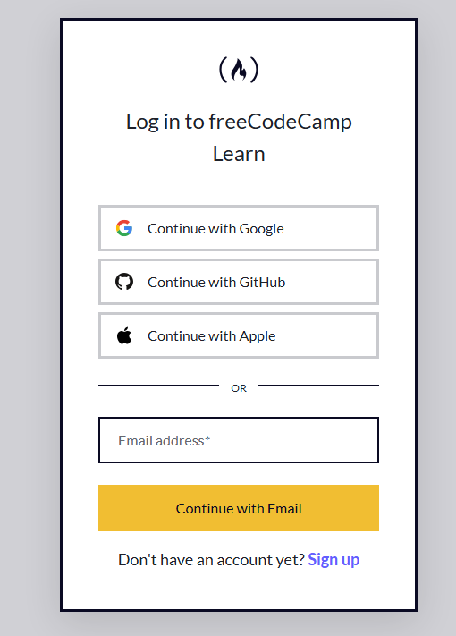
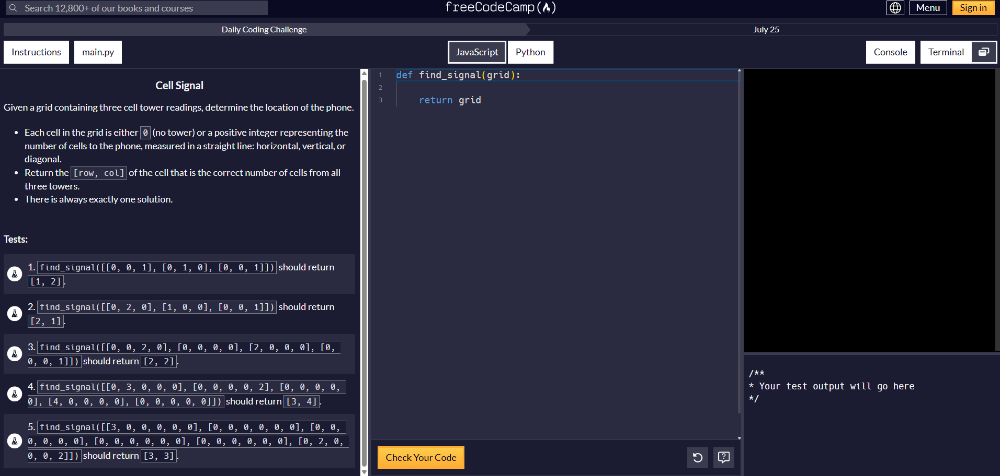
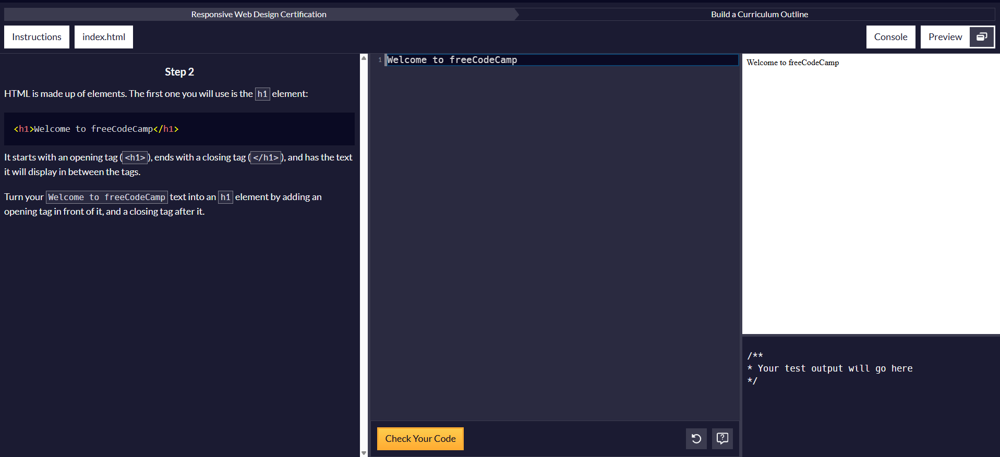
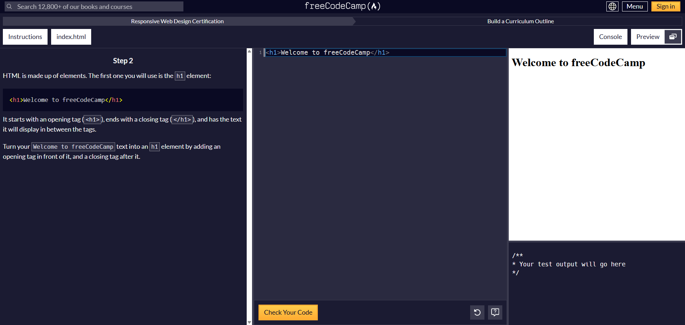
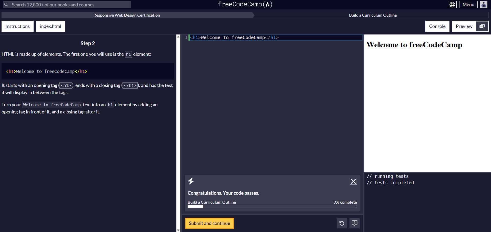

New learner guide · read this first
Getting started, one calm step at a time
A friendly, accessible guide to your first day learning to code on freeCodeCamp. No experience needed.
- For total beginners
- Works with a keyboard or screen reader
- Plain, simple English
On this page
Start hereWho this guide is for
This guide is for you if you are brand new to coding and about to open freeCodeCamp for the first time. You do not need any experience at all.
It is written with extra care for people who use a keyboard instead of a mouse, people who use a screen reader, and people who read English as a second language. The steps are short and the words are plain.
What you will have by the end: an account, a comfortable setup, a clear idea of where to begin, and your first lines of code written.
Read top to bottom on your first day, or jump to a section using the menu. Take breaks. Nothing here is a race.
01What is freeCodeCamp?
freeCodeCamp is a free, non-profit website where you learn to code by doing. You read a short instruction, write a little code, and the site checks your work right away. There is no cost, and there never will be.
You learn in small steps called challenges. Each one teaches a tiny piece. Over time, the tiny pieces add up to real skills.
02Create your account
- Go to freecodecamp.org and select Sign in.
- Choose how you want to sign up. You can use an email address, or sign in with a service you already trust. Pick whichever feels safe to you.
- If you use email, open the message freeCodeCamp sends and select the link inside to confirm.
- You are in. Your progress now saves automatically as you go.
- To start learning, open the curriculum. This is where all the courses and challenges live — pick a course and your first challenge opens up.

03Set up for comfort
Before you start coding, take two minutes to make the site comfortable for you. This matters most if you use assistive technology, so it comes early.
Make the text easy to read
Choose a light or dark theme in Settings — whichever is easier on your eyes. To make everything bigger, zoom your whole browser with Ctrl + (on a Mac, Cmd +). The text grows cleanly without breaking the page.
You move around the page with Tab (and Shift Tab to go back), and into the code box when you are ready to type.
One thing to know: once your cursor is inside the code box, Tab adds spacing instead of moving on.
To get back out: press Esc, then Tab. That frees you from the code box and returns you to the rest of the page.
The instructions and your own code read well. The little live preview of your webpage is not announced yet. Use the written instructions and the test messages to know what your code did — they tell you the same thing in words.
04Where should I start?
freeCodeCamp has a lot of courses. On day one, that can feel like standing in front of a huge menu. Here is the secret: you do not have to pick the perfect one. Just pick a starting point that matches what you want, and begin. You can always switch later.
Start at the very beginning of the curriculum, with HTML and CSS. It is the gentlest on-ramp, and you see results on screen fast.
Follow the web development path. You will learn HTML, CSS, then JavaScript. These are the core skills employers would look for.
Begin with the Python course (Scientific Computing with Python). A fuller data-science path is on the way.
Try English for Developers. It teaches coding words and English together, so you build both at once.
New to these words? HTML builds the structure of a web page — the text, images, and buttons. CSS styles that structure — the colors, fonts, and layout. Almost every website uses them together, which is why they make such a natural first step, and what you learn here carries over when you pick up other languages later.
freeCodeCamp is updating its courses, so you might see more than one place to begin. Do not worry about picking the "perfect" one — they all teach real skills. What matters on your first day is simply that you start. You can always switch later.
05A tour of the editor
When you open a challenge, the screen is split into a few parts. Once you know what each part is for, the rest feels easy.

06Your first challenge, step by step
- Read the instruction at the top or left. It is usually one small task.
- Move into the code box. Click it, or press Tab until you land inside.
- Start writing code! Follow the instructions and attempt to complete the challenge.
- Run the check. Select the Check Your Code button, or press Ctrl Enter (Cmd Enter on Mac).
- Read the result. If it passes, you move on. If not, the message tells you which test failed — read it and try again.
- Go to the next challenge and repeat!
See it on a real challenge
Here is what those steps look like on one of the very first challenges — turning the text Welcome to freeCodeCamp into a heading by wrapping it in an h1 element. Follow along on this challenge »


<h1> tag and a closing </h1> tag.
If your code gets messy or confusing, use Reset to bring back the starting code and try the step fresh. Mistakes are part of learning!
To undo your work, press Ctrl Z (Cmd Z on Mac) — hold it, or keep pressing, until your code is back to how it started.
The Reset button does the same thing, but it cannot be reached with the keyboard alone, so Ctrl Z is your best bet. (The Quick reference explains why.)
07When you get stuck
Everyone gets stuck. It is normal, and it is not a sign you are bad at this. Here is what to do, in order:
- Read the failing message again. It usually names exactly where your code might have failed.
- Reset the step if your code drifted far from where it started.
- Search the forum. Odds are someone asked your exact question already.
- Ask for help on the forum or Discord. Say what you tried and what happened. This gives anyone helping you better context on what you need help with!
08Other ways to learn
Everyone learns differently, and the coding challenges are just one way in. If another format makes things click, try these — they cover the same skills!
- Watch Full video courses on the freeCodeCamp YouTube channel. These are great if you like seeing someone build alongside you.
- Listen The freeCodeCamp Podcast, for stories and advice you can play on the go.
- Read articles freeCodeCamp News has thousands of written tutorials when you want to go deeper on one specific topic.
- Learn with people The forum and Discord let you ask questions and see how others solved the same steps.
You can mix these freely. Many people watch a video to understand an idea, then return to the challenges to practice it. Use whatever helps it stick.
09Quick reference
| To do this | Press |
|---|---|
| Run the tests on your code | Ctrl Enter / Cmd Enter |
| Step out of the code box — returns you to the top of the page | Esc, then Tab |
| Undo / restart a step — the Reset button is not keyboard-reachable | Ctrl Z / Cmd Z |
| Make everything bigger | Ctrl + / Cmd + |
| Move forward / back on the page | Tab / Shift Tab |
Why the Reset button needs a workaround: it sits after the code editor in the tab order, so tabbing forward never lands on it, and pressing Esc then Tab jumps focus back to the top of the page instead. Until that changes, use Ctrl Z (Cmd Z) to undo back to the starting code.
Shortcuts can change as the site updates. If one does not work, check the editor's settings menu for the current keys.